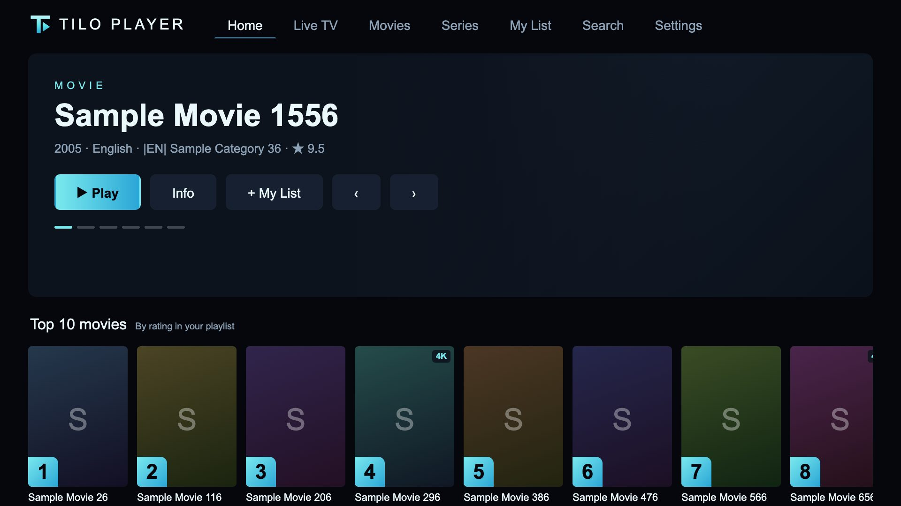
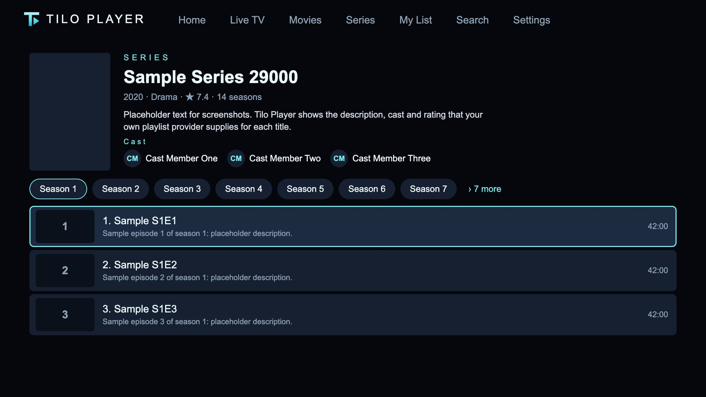

Your playlists, on your TV, done right.
Tilo Player is a fast media player for Samsung Smart TVs, designed for the remote control. Add a playlist you have the right to use and enjoy it in a clean, quick app.
Please note: Tilo Player does not include, provide, host or sell any channels, films or series. You need your own playlist from a source you are allowed to use.


What it does
Your playlists
Works with M3U playlists and Xtream-style accounts.
Works with M3U playlists and Xtream-style accounts.
Fast search
Results appear as you type, for movies and series.
Results appear as you type, for movies and series.
Live TV
Favourites, recently watched and channel search.
Favourites, recently watched and channel search.
Pick up where you stopped
Continue or start from the beginning, with a next-episode countdown for series.
Continue or start from the beginning, with a next-episode countdown for series.
Subtitles and audio
Choose tracks, size and colour, and remember your choices.
Choose tracks, size and colour, and remember your choices.
Private by design
No account, no ads. Your playlist stays on your device. See the Privacy Policy.
No account, no ads. Your playlist stays on your device. See the Privacy Policy.